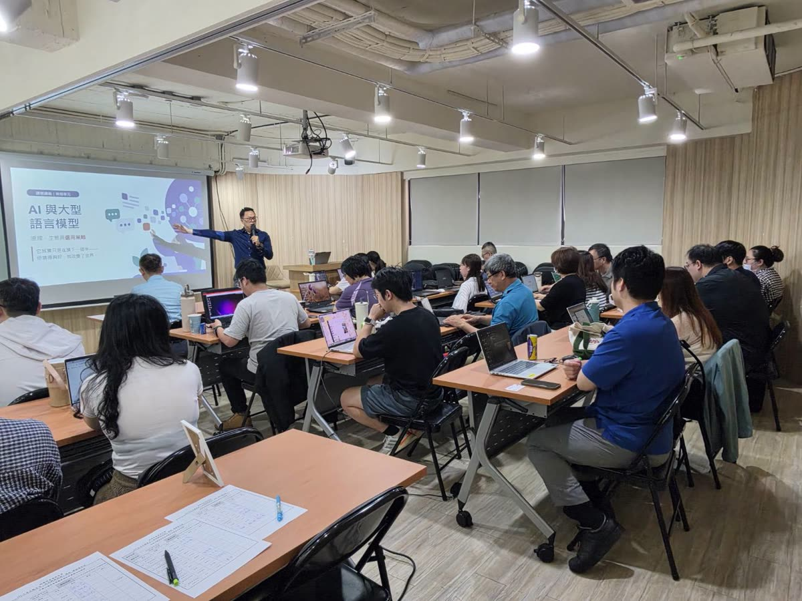
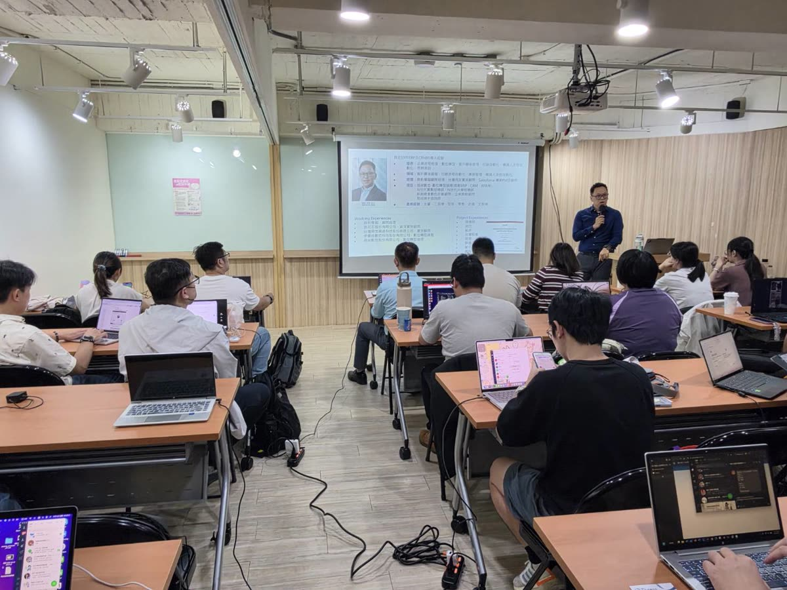
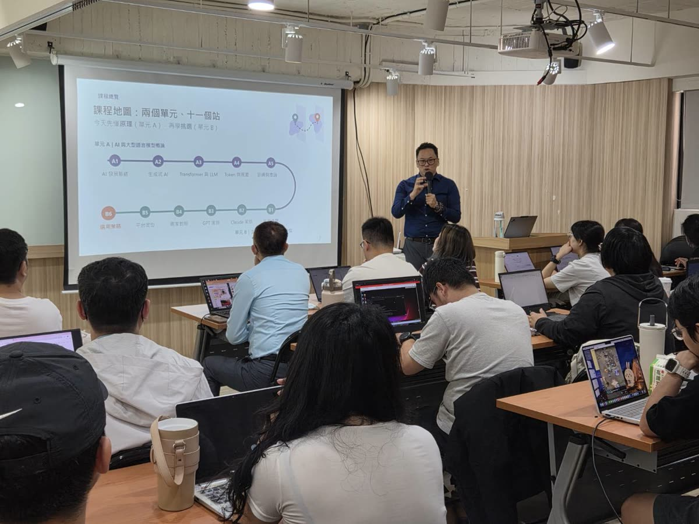
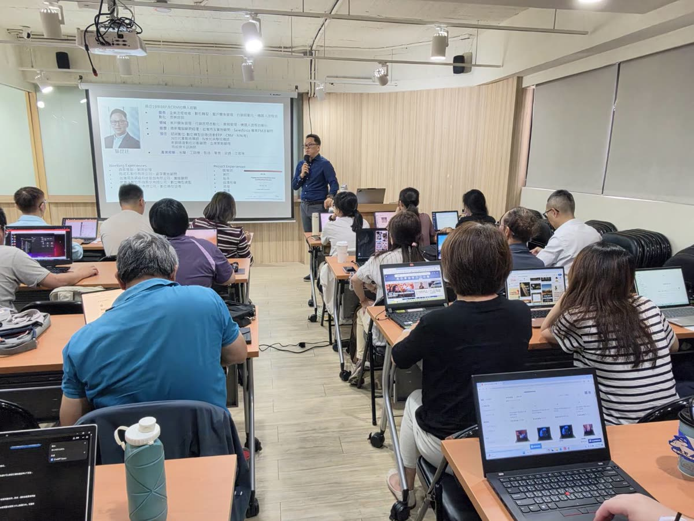
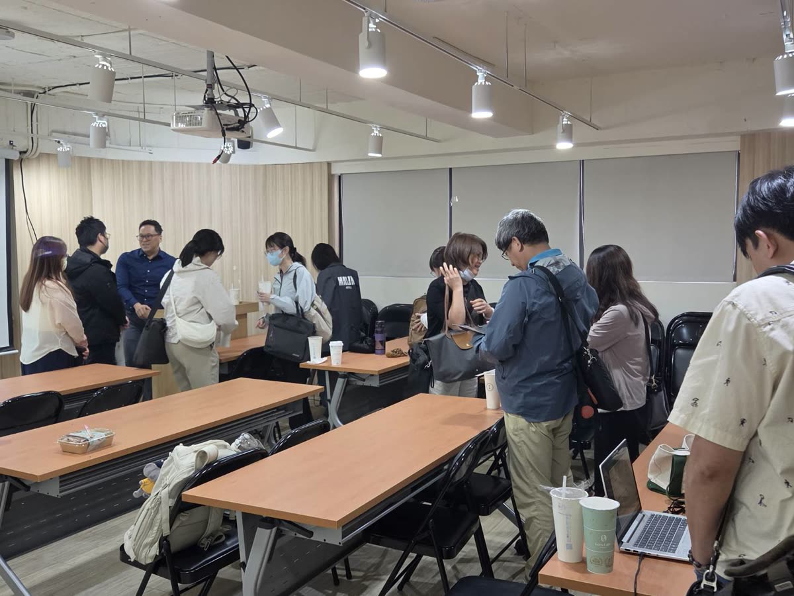

個人線下班
NT$4,000/ 人 · 1 天 5 小時
- 實體小班，現場逐桌指導
- 帶自己的筆電與真實工作來練
- 課後 30 天練習清單
- 日期與地點：下一梯開放登記中
看了很多教學影片，自己打開對話框，還是不知道要打什麼。
ChatGPT 和 Claude 都註冊了，卻說不出兩個差在哪、哪件事該交給誰。
試過幾次，AI 給的東西不能直接用，最後還是自己重寫。
不講 AI 的歷史，不比較十幾種工具。只用兩個最好用的，把你每天會碰到的工作做一遍。
什麼工作交給 ChatGPT、什麼交給 Claude；公司資料哪些可以丟、哪些不行。
一套提示詞骨架，現場寫客戶信、週報、會議紀錄；讓它讀你的表格和截圖。
讀長文件與合約、用「專案」建你自己的知識庫、用 Artifacts 直接做出報表或小工具。
同一個任務，ChatGPT 發想、Claude 整理成能交出去的企劃、SOP 或簡報大綱。
用你手上真實的工作從頭做一遍，我逐桌走、逐個排解卡關。這一段是線上課做不到的。
回家後每天 15 分鐘，讓今天學的東西變成習慣。
我也教過線上直播課。後來發現差別不在內容，在你卡住的那一刻。現場上課，你打錯一句提示詞，我走過去看一眼就知道問題在哪；隔壁同學的用法，常常比我的範例更貼近你的工作。五個小時，你是真的做完一遍，不是看完一遍。
昆廷老師
在企業現場陪老闆和主管把 AI 接進日常工作。比起教工具怎麼按，我更在意你回到公司後，第一件事要拿 AI 做什麼。





可以。課程從註冊、介面開始，重點是讓你在現場把真實工作做完，不需要任何程式背景。
一台筆電，以及一件你最近手上正在處理的工作（信件、報表、企劃都可以）。帳號設定方式會在課前寄給你。
下一梯的日期與地點確定後，會優先通知有登記的人。
先約 30 分鐘免費諮詢，了解團隊現況與想解決的工作，再把練習題換成貴公司的真實案例。